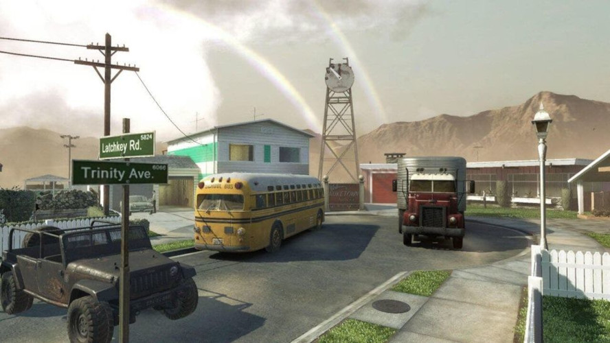
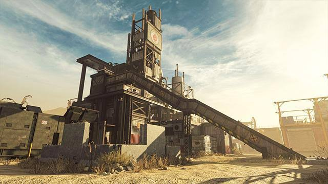
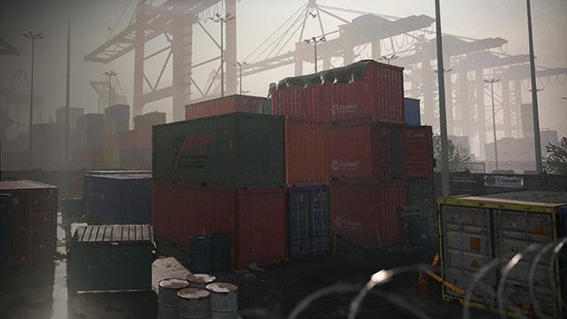
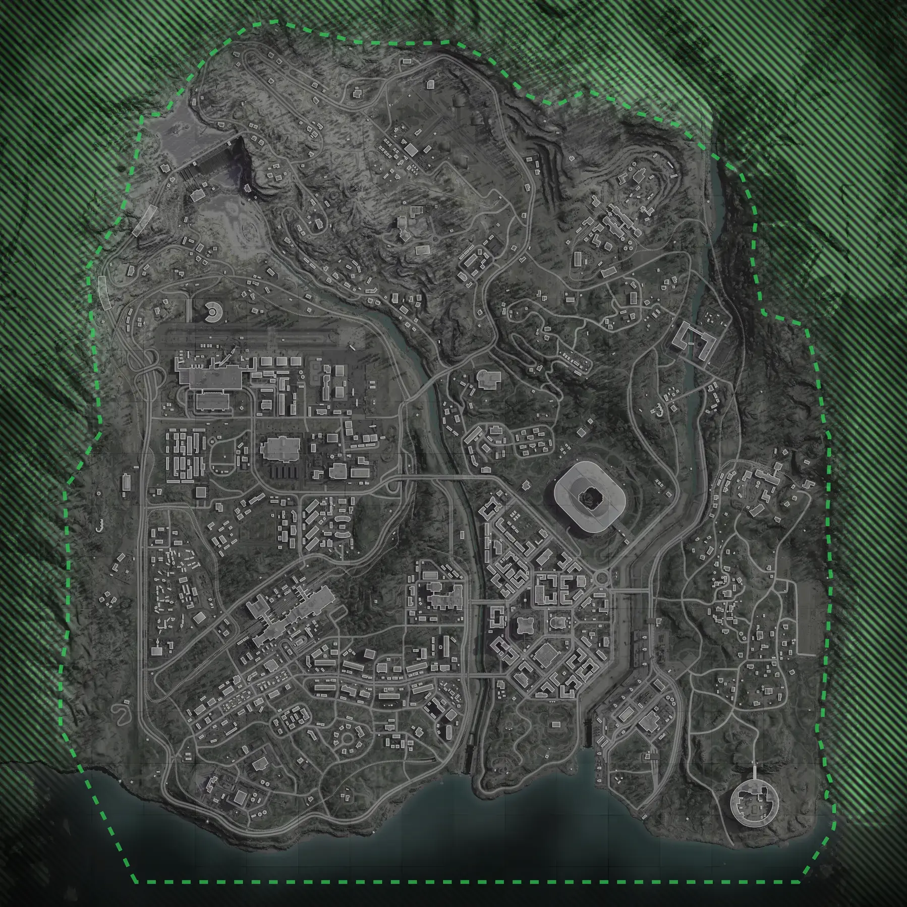
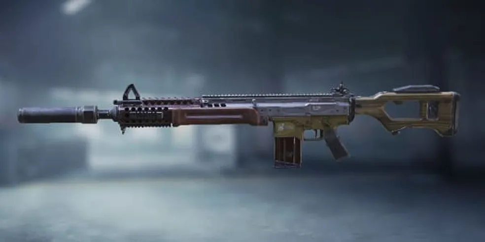
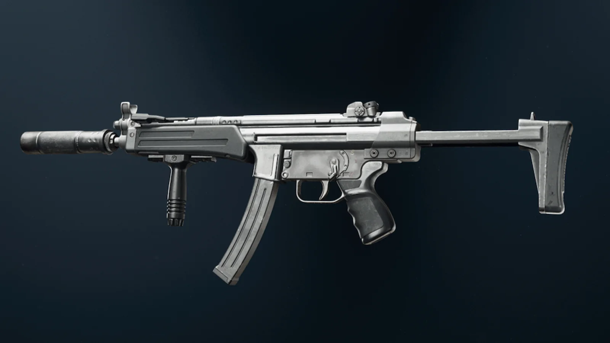
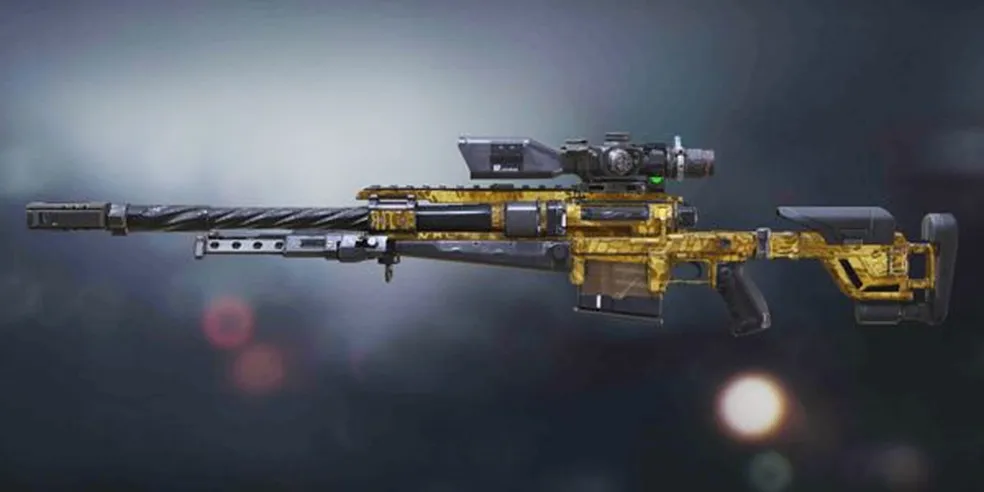
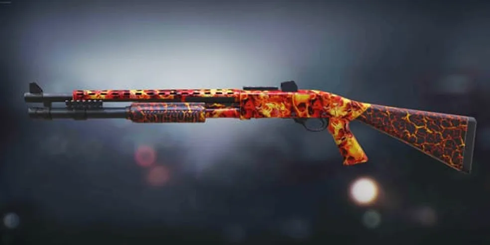

CAMPANHA
Experiência individual focada em uma história com personagens, missões e acontecimentos cinematográficos.

FIRST PERSON SHOOTER
Prepare-se para entrar em batalhas intensas, trabalhar em equipe e enfrentar diferentes cenários ao redor do mundo.
EXPLORARCall of Duty é uma das franquias mais conhecidas de jogos de tiro em primeira pessoa. A série ficou conhecida por suas campanhas cinematográficas, partidas multiplayer competitivas e diferentes experiências de combate.
Ao longo dos anos, a franquia passou por diferentes períodos históricos e universos fictícios, indo desde conflitos inspirados na Segunda Guerra Mundial até cenários modernos e futuristas.
Além das campanhas, os jogos possuem modos multiplayer nos quais os jogadores competem em equipes e precisam trabalhar juntos para alcançar os objetivos da partida.
Estratégia, movimentação e trabalho em equipe são elementos importantes durante as partidas.
A franquia Call of Duty possui mais de duas décadas de história e passou por diferentes épocas e estilos.
O primeiro Call of Duty foi lançado em 2003. O jogo tinha como principal inspiração os conflitos da Segunda Guerra Mundial.
Call of Duty 4: Modern Warfare levou a franquia para um cenário moderno e ajudou a estabelecer vários elementos que se tornaram tradicionais no multiplayer da série.
Black Ops apresentou uma narrativa ligada à Guerra Fria, com uma campanha focada em espionagem, operações secretas e conspirações.
Modern Warfare recebeu um reboot em 2019, trazendo uma nova versão da história e uma experiência multiplayer moderna.
Warzone expandiu a experiência para um grande ambiente online, introduzindo o Battle Royale e mapas de grande escala.
Experiência individual focada em uma história com personagens, missões e acontecimentos cinematográficos.
Partidas competitivas entre equipes, nas quais comunicação, estratégia e rapidez são fundamentais.
Grandes mapas onde os jogadores precisam explorar o ambiente e sobreviver enquanto a área disponível diminui.
Experiências nas quais jogadores podem trabalhar juntos para completar objetivos e enfrentar desafios.
Conheça alguns dos mapas e equipamentos que fazem parte da experiência de Call of Duty.

Um dos mapas mais conhecidos da franquia.

Mapa pequeno e conhecido por combates rápidos.

Um mapa compacto cheio de contêineres.

Um dos mapas mais marcantes de Warzone.

Versáteis e adequados para diferentes distâncias.

Focadas em mobilidade e combates próximos.

Voltados para confrontos a longa distância.

Mais adequadas para combates de curta distância.
Jogadores que gostam de avançar rapidamente, pressionar os adversários e procurar confrontos constantemente.
anos de franquia
ano do primeiro jogo
gênero principal
multiplayer competitivo